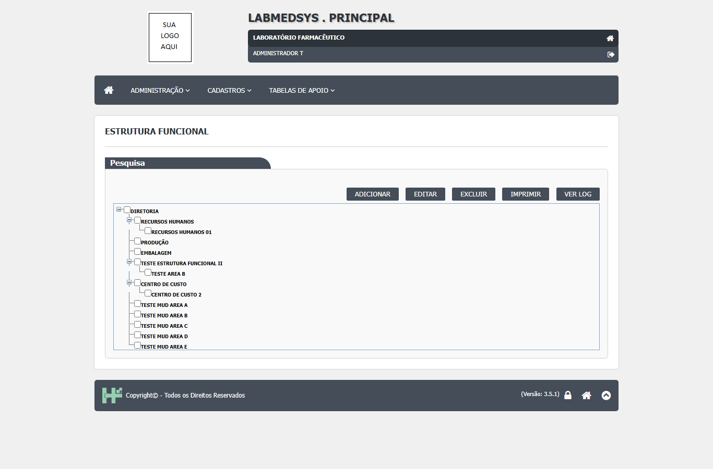
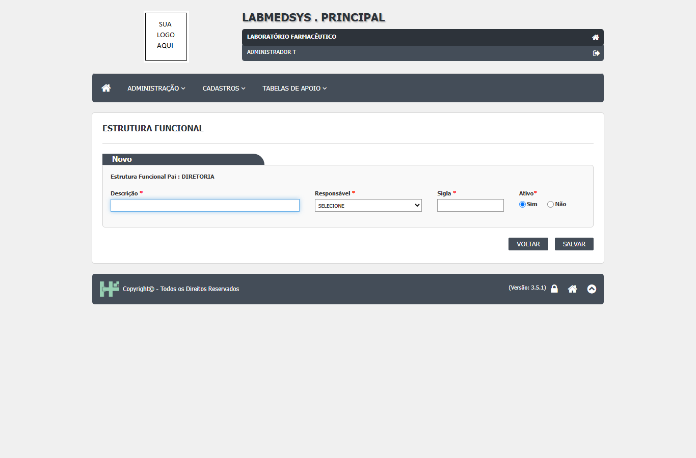
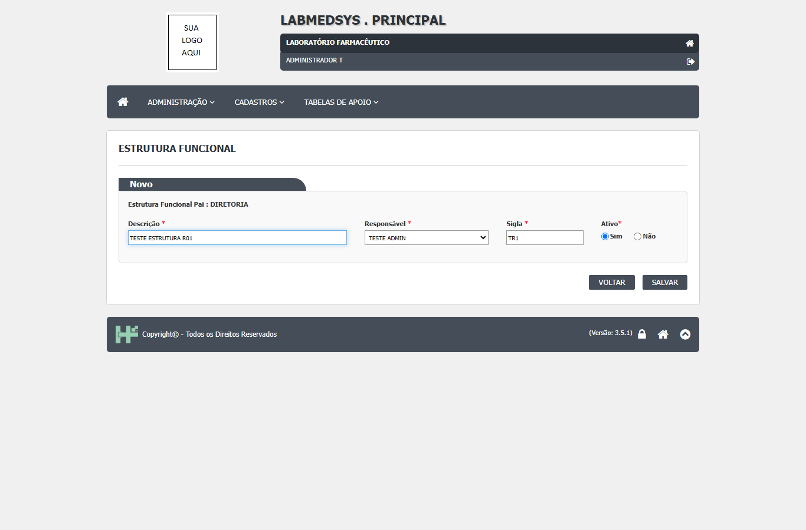
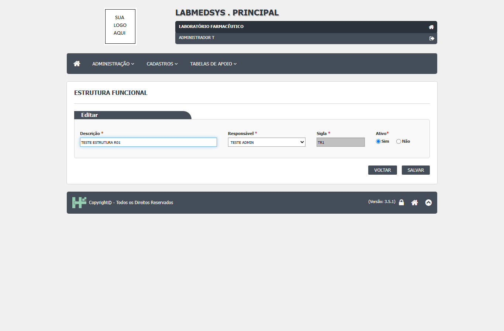
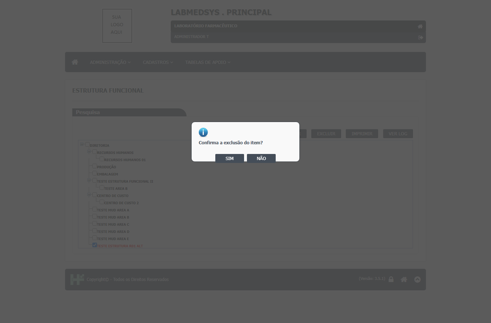
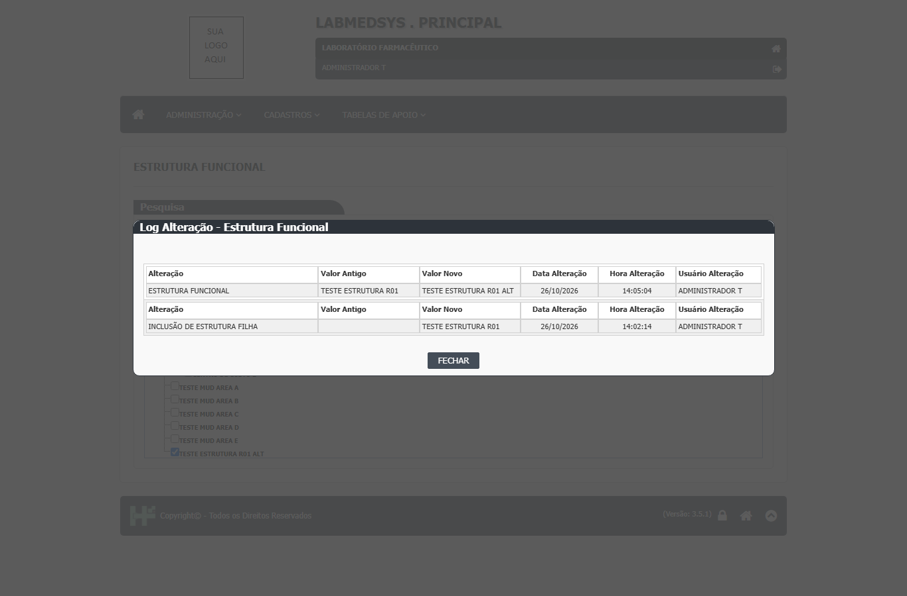
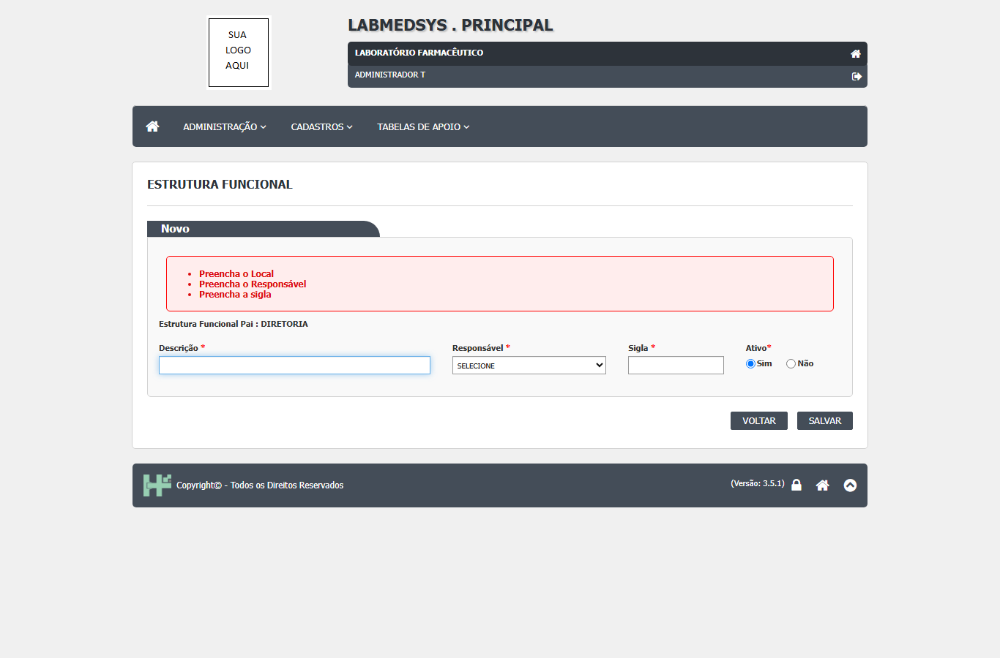
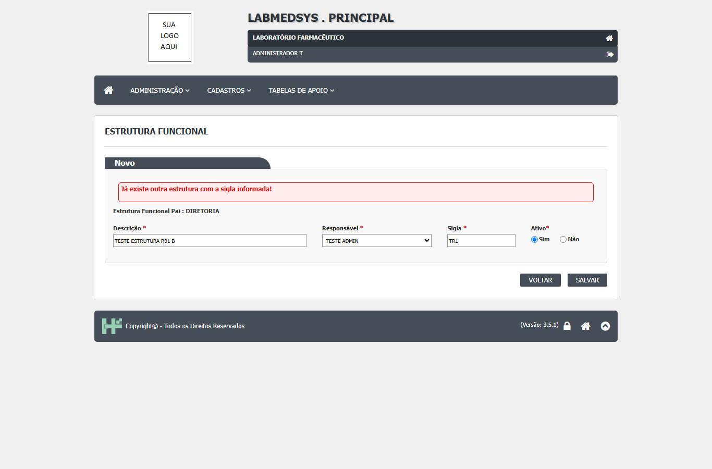
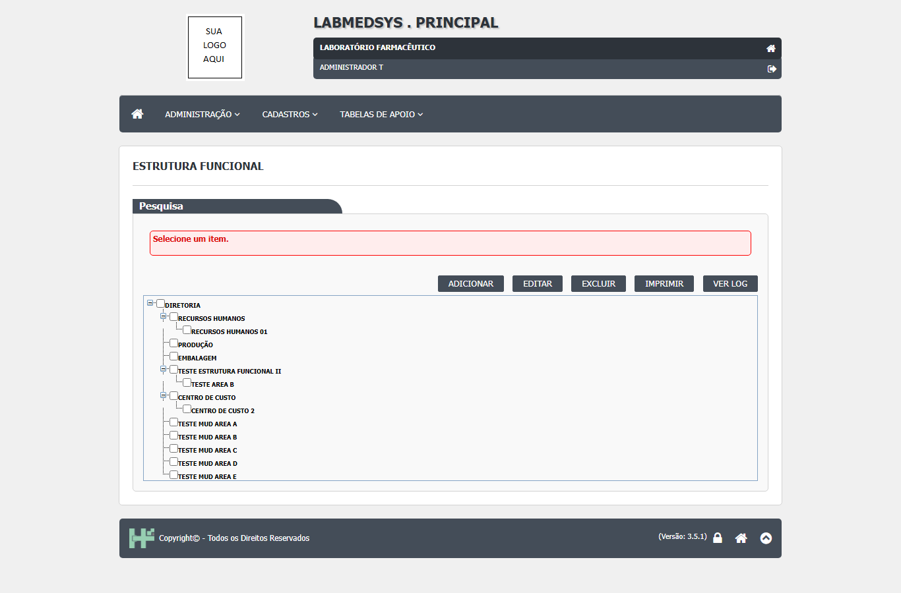

Para que serve
Cadastra o organograma da empresa como uma árvore: diretoria, divisão, seção e subníveis (por exemplo, Produção e Embalagem sob uma Diretoria). Cada nível tem descrição, sigla (até 5 letras), responsável (um usuário do sistema) e situação. A árvore é a base para: dizer a que setor cada usuário pertence (lotação), a que setores cada perfil se liga e quem é o dono de cada ambiente, equipamento, instrumento, utilidade e utensílio (SIS_USUARIO.sql:50 e 80; SIS_PERFIL_LOCAL.sql:1-12; TBL_AMBIENTE.sql:5 e 16; TBL_UTILIDADE.sql:13 e 25). O código mostra três telas no mesmo cadastro:
- Árvore (lista) com caixas de marcação; o usuário marca um nível e usa Adicionar (filho), Editar, Excluir, Imprimir e Ver Log (local_lst.aspx:40-54; local_lst.aspx.cs:73-137).
- Formulário de um nível: descrição, responsável, sigla e situação (local_ed.aspx:53-89).
- Relatório da árvore inteira (local_rel.aspx.cs:12-70).
O cadastro mostra quem é o responsável de cada nível, mas não guarda cargo, qualificação nem substituto; a lotação por pessoa está no cadastro de Profissional (Administração).
Quem usa e em que etapa do processo
Quem usa
- Quem mantém o organograma e os cadastros de apoio: Recursos Humanos, qualidade ou diretoria (leitura da área, a validar).
- Quem consulta a árvore e o histórico.
- Quem pode abrir, incluir, alterar, excluir, imprimir e ver o histórico está em "Quem pode usar (permissões)", mais abaixo.
Em que etapa do processo entra (tela 9 do menu Cadastros, módulo Principal)
- Pelo menu superior Cadastros › Estrutura Funcional, que abre a árvore.
- Adicionar exige um nível marcado (o pai); com a árvore vazia, cria a primeira raiz. Editar e Excluir exigem um nível marcado.
O que acontece depois (para onde o trabalho segue)
- SALVAR pergunta "Confirma a inclusão do item?" ou "Confirma a alteração do item?". Com SIM, o sistema confere a sigla, grava o nível e o responsável e mostra "Inclusão realizada com sucesso!" ou "Alteração realizada com sucesso!"; o OK volta à árvore.
- O nível gravado passa a ser oferecido como proprietário nos formulários de Ambiente, Equipamento, Instrumento, Utilidade e Utensílio e na lotação do Profissional (ver "Dados").
Fonte: Resumo da tela e fluxo da tela (leitura do código e dos testes). O que for leitura da área precisa ser validado com a área.
Antes de começar (o que precisa existir)
- Entre no módulo Principal e abra Cadastros › Estrutura Funcional.
- Quem não tem a função desta tela (código 12) é levado à página de acesso negado ao abrir a árvore (local_lst.aspx.cs:21; ClassePaiLst.cs:65). Os botões Adicionar, Editar, Excluir, Imprimir e Ver Log só aparecem para quem tem a ação correspondente (local_lst.aspx.cs:29-33).
- Antes, tenha o responsável como usuário ativo do sistema (local_ed.aspx.cs:41-43).
Passo a passo
Situação das imagens (14/11/2026): imagens reaproveitadas dos testes de 26/10/2026 (rodada 3), cada uma conferida contra o texto. Sem imagem: o aviso de sucesso, a inativação (nível em vermelho), a árvore depois de excluir, a recusa de exclusão de nível com filhos ou usuários, o relatório da árvore.
Ver a árvore
- A árvore abre sozinha, com todos os níveis expandidos. Os níveis inativos aparecem em vermelho (local_lst.aspx.cs:253-254).

Figura 1: A tela Estrutura Funcional: a árvore com os níveis expandidos e os botões ADICIONAR, EDITAR, EXCLUIR, IMPRIMIR e VER LOG (não há filtros nem grade).
- Marque a caixa do nível que quer usar. Marque um só: com mais de um marcado, Editar, Excluir e Ver Log recebem os códigos juntos e falham (local_lst.aspx.cs:230-245).
Adicionar um nível
- Marque o nível que será o pai e clique em Adicionar. Sem nível marcado aparece "Selecione um item.", exceto quando a árvore está vazia (local_lst.aspx.cs:73-96).
- Preencha Descrição, Responsável e Sigla (até 5 caracteres) e deixe Ativo em Sim (local_ed.aspx:53-89).

Figura 2: O formulário "Novo" para adicionar um nível sob DIRETORIA: Descrição, Responsável, Sigla e Ativo = Sim.

Figura 3: O formulário "Novo" preenchido (Descrição, Responsável e Sigla), antes de salvar.
- Clique em SALVAR e responda SIM. Se a sigla já existir em outro nível ativo, aparece "Já existe outra estrutura com a sigla informada!" (local_ed.aspx.cs:136-147).
Editar um nível
- Marque o nível e clique em Editar. O pai não aparece e a sigla fica travada; dá para mudar descrição, responsável e situação (local_ed.aspx.cs:51-67).

Figura 4: O formulário "Editar" do nível: a Sigla aparece travada (cinza); Descrição, Responsável e Ativo podem ser mudados; não há campo Justificativa.
- A tela não pede justificativa para alterar nem para inativar (local_ed.aspx.cs:79-95).
Excluir um nível
- Marque o nível e clique em Excluir; o sistema pergunta só "Confirma a exclusão do item?", sem justificativa (local_lst.aspx.cs:115-137).

Figura 5: Ao clicar em EXCLUIR com um nível marcado, a pergunta "Confirma a exclusão do item?" (SIM e NÃO) aparece sobre a árvore, sem pedir justificativa.
- Se o nível tem níveis filhos ou usuários, ambientes, equipamentos, instrumentos ou utilidades ligados, a exclusão é recusada e aparece "Erro ao efetuar a exclusão!"; o motivo só aparece ao clicar em "Detalhe do erro (+)" (local_lst.aspx.cs:156-170; dalLocal.cs:421-491).
Ver o histórico, imprimir
- Ver Log abre o histórico do nível marcado (local_lst.aspx.cs:308-330).

Figura 6: A janela "Log Alteração - Estrutura Funcional": a mudança de ESTRUTURA FUNCIONAL (valor antigo e novo) e a linha "INCLUSÃO DE ESTRUTURA FILHA".
- Imprimir abre o relatório da árvore inteira, sem filtro (local_lst.aspx.cs:302-306).
O que acontece ao confirmar ou salvar
- SALVAR pergunta "Confirma a inclusão do item?" ou "Confirma a alteração do item?". Com SIM, o sistema confere a sigla, grava o nível e o responsável e mostra "Inclusão realizada com sucesso!" ou "Alteração realizada com sucesso!"; o OK volta à árvore (local_ed.aspx.cs:79-95, 124-194 e 118-122).
- O nível gravado passa a ser oferecido como proprietário nos formulários de Ambiente, Equipamento, Instrumento, Utilidade e Utensílio e na lotação do Profissional (ver "Dados").
Registro em uso por outro cadastro (inativar ou excluir):
- Se o nível tem níveis filhos ou usuários, ambientes, equipamentos, instrumentos ou utilidades ligados, a exclusão é recusada e aparece "Erro ao efetuar a exclusão!"; o motivo só aparece ao clicar em "Detalhe do erro (+)".
O que o sistema recusa
- "Preencha o Local" / "Preencha o Responsável" / "Preencha a sigla" / "A Situação é obrigatório!": Campo em branco (local_ed.aspx:57, 66, 75 e 83)
- "Já existe outra estrutura com a sigla informada!": Sigla igual à de outro nível ativo (local_ed.aspx.cs:145)
- "Erro ao efetuar a alteração!" com o texto entre colchetes: Falha ao gravar a alteração (local_ed.aspx.cs:179-182)
- "Erro na inclusão da Estrutura Funcional.": Falha inesperada na inclusão (bllLocal.cs:109)
- "Selecione um item.": Adicionar (com árvore cheia), Editar, Excluir ou Ver Log sem nível marcado (local_lst.aspx.cs:86, 109, 133 e 326)
- "Estrutura possui profissional associado!": Nível com usuário (profissional) na divisão (local_lst.aspx.cs:149-152)
- "Erro ao efetuar a exclusão!" (motivo no "Detalhe do erro (+)"): Nível com filhas, usuários, ambientes, equipamentos, instrumentos ou utilidades ligados (local_lst.aspx.cs:164-169)
- "Existem Estruturas Funcionais filhas desta." / "Existem Usuários vinculados a esta Estrutura Funcional." / "Existem Ambientes vinculados a esta Estrutura Funcional." / "Existem Equipamentos vinculados..." / "Existem Instrumentos vinculados..." / "Existe Cadastro de Utilidades vinculados...": Motivos da recusa de exclusão, no detalhe (dalLocal.cs:432, 443, 454, 465, 476 e 487)

Figura 7: Salvar com tudo em branco: caixa vermelha com "Preencha o Local", "Preencha o Responsável" e "Preencha a sigla".

Figura 8: Salvar com uma sigla já usada: mensagem vermelha "Já existe outra estrutura com a sigla informada!".

Figura 9: Clicar em um botão sem marcar nível: mensagem vermelha "Selecione um item.".
Quem pode usar (permissões)
- A árvore usa a função de tela "12" (local_lst.aspx.cs:21). A base das listas confere a função logo no início e leva quem não a tem à página de acesso negado (ClassePaiLst.cs:65; BaseController.cs:26-31). Os botões Adicionar, Editar, Excluir, Imprimir e Ver Log são mostrados ou escondidos conforme as ações do perfil (local_lst.aspx.cs:29-33).
- O formulário usa a mesma função (local_ed.aspx.cs:23). A base do formulário só calcula as ações e não bloqueia a entrada (ClassePaiEd.cs:71-156), e esta página não esconde o SALVAR por permissão: o botão aparece para qualquer um que abra o endereço com os parâmetros
local,paieacao(local_ed.aspx.cs:21-49 e 79-95). A chamada de bloqueio do próprio arquivo está comentada (local_ed.aspx.cs:27). Mesmo padrão do DV-PRI-025. - O relatório (
local_rel) não tem conferência própria de permissão (local_rel.aspx.cs:12-70). - O detalhe da conferência de acesso está na seção "Segurança e acesso" desta tela.
Cuidados e falhas conhecidas
- Nenhum. A tela não foi testada como tela e nenhum DV-PRI registrado tem este cadastro como alvo (
defeitos/defeitos-completo.json, campotela). O DV-PRI-011 cita esta tela como exemplo do próprio sistema que "monta a mensagem dizendo o que impede" (defeitos-completo.json, DV-PRI-011, código dalLocal.cs:421-450); a conferência da mensagem na tela fica para o teste. - DV-PRI-009 (Alta), visto em outro cadastro (Excluir Ambiente e Equipamento sem justificativa). Nesta tela: Mesmo comportamento: só a confirmação "Confirma a exclusão do item?" (local_lst.aspx.cs:115-137). Situação aqui: A confirmar no teste.
- DV-PRI-013 (Média), visto em outro cadastro (Alterar e inativar Pessoa Jurídica sem justificativa). Nesta tela: Mesmo comportamento: nenhum campo de justificativa na alteração nem na inativação (local_ed.aspx.cs:79-95). Situação aqui: A confirmar no teste.
- DV-PRI-011 (Média), visto em outro cadastro (Recusa de exclusão com mensagem genérica). Nesta tela: O motivo existe, mas só no "Detalhe do erro (+)" (local_lst.aspx.cs:164-169). Situação aqui: A confirmar no teste.
- DV-PRI-014 (Alta), visto em outro cadastro (Histórico de excluído não pode ser consultado). Nesta tela: O histórico da exclusão fica no código do pai e o nível some da árvore (dalLogAlteracaoLocal.cs:48-60). Situação aqui: A confirmar no teste.
- DV-PRI-025 (Alta), visto em outro cadastro (Telas de edição abrem pelo endereço sem permissão). Nesta tela: O formulário não bloqueia a entrada (ver segurança). Situação aqui: A confirmar no teste.
- (a confirmar no teste) Alterar, inativar e excluir sem justificativa (RN-PRI-070; DV-PRI-009 e DV-PRI-013 nos outros cadastros). A justificativa também é gravada vazia no histórico.
- (a confirmar no teste) O histórico só registra a troca do nome. Mudar o responsável, a sigla ou inativar um nível não deixa rastro.
- (a confirmar no teste) A exclusão não confere utensílios, perfis nem responsáveis ligados.
- (a confirmar no teste) Marcar mais de um nível quebra Editar, Excluir e Ver Log: o código junta os códigos com hífen e converte em número. Erro técnico (DV-PRI-026).
- (a confirmar no teste) A conferência de exclusão do profissional olha só a divisão, enquanto a conferência geral olha seção e divisão:
SetorPossuiUsuariotesta sóDIVISAO, ePossoExcluirtestaSECAOouDIVISAO. - (a confirmar no teste) A conferência de exclusão olha os itens já excluídos: as consultas não filtram LIXEIRA; um ambiente ou equipamento que está na lixeira ainda impede a exclusão do nível (inferência).
- (a confirmar no teste) Sigla só é única entre ativos: depois de inativar um nível, outro pode usar a sigla; reativar o antigo cria duas siglas iguais.
- (a confirmar no teste) A coluna SIGLA não está na definição da tabela do projeto de banco, mas é gravada e lida pelo código. Ponto para validar com o DBA.
- (a confirmar no teste) A procedure
pListaLocaisdo projeto de banco não aceita situação vazia, mas o código a chama com NULL para montar a árvore. - (a confirmar no teste) O código também aponta a tabela
TBL_EQUIPAMENTO_PRINCIPAL, enquanto o projeto de banco defineTBL_EQUIPAMENTO. - (a confirmar no teste) Tela repetida no Estoque (função 104), com as mesmas regras: mudanças feitas em uma das duas valem para a outra (mesma tabela), mas as permissões são conferidas por funções diferentes.
- (a confirmar no teste) Existe uma exclusão física sem uso:
excluiLocal(int IdLocal)faz DELETE definitivo, mas nenhuma tela do Principal a chama. - (a confirmar no teste) Mensagem com concordância errada: "A Situação é obrigatório!".
- As imagens deste manual vêm do teste de 26/10/2026 (rodada 3). Os resultados desse teste ainda precisam ser conferidos com a seção "Casos de teste" desta tela, que pode ter sido escrita antes dele.
Ícones e botões da lista
Inclui também os botões do formulário.
| Ícone ou botão | O que faz | Quando aparece |
|---|---|---|
| Adicionar | Abre o formulário de um nível filho do marcado | Para quem tem Incluir |
| Editar | Abre o nível marcado | Para quem tem Alterar |
| Excluir | Pede a confirmação e exclui o nível marcado | Para quem tem Excluir |
| Imprimir | Abre o relatório da árvore completa (não há Excel) | Para quem tem Imprimir/Excel |
| Ver Log | Abre o histórico do nível marcado | Para quem tem Consultar log |
| SALVAR | Pede confirmação e grava | No formulário |
| VOLTAR | Volta à árvore sem gravar | No formulário |
Campos da tela
Caminhos das fontes na seção Resumo da tela. "Sim (servidor)" quando o servidor também confere; "Só na tela" quando só o navegador confere.
Árvore (lista)
| Campo na tela | Tipo | Obrigatório | Regra, limite ou valores possíveis | Fonte |
|---|---|---|---|---|
| Árvore de estruturas | Árvore com caixas de marcação | Sim, para Editar, Excluir e Ver Log | Todos os níveis não excluídos, ordenados pela hierarquia; inativos em vermelho; "Selecione um item." sem marcação | local_lst.aspx:49-54; local_lst.aspx.cs:38-71 e 247-275; pListaLocais.sql:29-48 |
| Botões Adicionar, Editar, Excluir, Imprimir, Ver Log | Botões | Não | Aparecem conforme as ações do perfil | local_lst.aspx:40-44; local_lst.aspx.cs:29-33 |
Formulário
| Campo na tela | Tipo | Obrigatório | Regra, limite ou valores possíveis | Fonte |
|---|---|---|---|---|
| Estrutura Funcional Pai | Texto de leitura | Não se aplica | Mostra o nome do pai só na inclusão de um filho | local_ed.aspx:44-50; local_ed.aspx.cs:68-76 |
| Descrição | Texto | Sim | Até 100 caracteres; maiúsculas, sem espaços repetidos; só letras, números e alguns sinais (filtro do navegador); "Preencha o Local" | local_ed.aspx:53-60; local_ed.aspx.cs:149 |
| Responsável | Lista | Sim | Usuários ativos do sistema; "Preencha o Responsável" | local_ed.aspx:62-70; local_ed.aspx.cs:41-43 |
| Sigla | Texto | Sim | Até 5 caracteres; maiúsculas e sem espaços; "Preencha a sigla"; travada depois de gravada; única entre os níveis ativos | local_ed.aspx:71-79; local_ed.aspx.cs:63-66 e 132-147 |
| Ativo | Sim / Não | Sim | Padrão Sim; "A Situação é obrigatório!" | local_ed.aspx:80-89 |
Botões e ações
| Botão ou ação | Quando aparece | O que faz | Fonte |
|---|---|---|---|
| Adicionar | Para quem tem Incluir | Abre o formulário de um nível filho do marcado | local_lst.aspx.cs:73-96 |
| Editar | Para quem tem Alterar | Abre o nível marcado | local_lst.aspx.cs:98-113 |
| Excluir | Para quem tem Excluir | Pede a confirmação e exclui o nível marcado | local_lst.aspx.cs:115-137 e 139-195 |
| Imprimir | Para quem tem Imprimir/Excel | Abre o relatório da árvore completa (não há Excel) | local_lst.aspx.cs:302-306 |
| Ver Log | Para quem tem Consultar log | Abre o histórico do nível marcado | local_lst.aspx.cs:308-330 |
| SALVAR | No formulário | Pede confirmação e grava | local_ed.aspx.cs:79-95 |
| VOLTAR | No formulário | Volta à árvore sem gravar | local_ed.aspx.cs:97-100 |
Mensagens do sistema
Nenhuma mensagem desta tela apareceu em teste. Todas vêm do texto do código.
| Mensagem (texto exato do código) | Quando aparece | Fonte |
|---|---|---|
| "Confirma a inclusão do item?" / "Confirma a alteração do item?" | Ao clicar em SALVAR | local_ed.aspx.cs:93 e 89 |
| "Inclusão realizada com sucesso!" / "Alteração realizada com sucesso!" | Depois de gravar | local_ed.aspx.cs:166 e 187 |
| "Preencha o Local" / "Preencha o Responsável" / "Preencha a sigla" / "A Situação é obrigatório!" | Campo em branco | local_ed.aspx:57, 66, 75 e 83 |
| "Já existe outra estrutura com a sigla informada!" | Sigla igual à de outro nível ativo | local_ed.aspx.cs:145 |
| "Erro ao efetuar a alteração!" com o texto entre colchetes | Falha ao gravar a alteração | local_ed.aspx.cs:179-182 |
| "Erro na inclusão da Estrutura Funcional." | Falha inesperada na inclusão | bllLocal.cs:109 |
| "Selecione um item." | Adicionar (com árvore cheia), Editar, Excluir ou Ver Log sem nível marcado | local_lst.aspx.cs:86, 109, 133 e 326 |
| "Confirma a exclusão do item?" | Ao clicar em Excluir | local_lst.aspx.cs:124 |
| "Exclusão realizada com sucesso!" | Depois de excluir | local_lst.aspx.cs:175 |
| "Estrutura possui profissional associado!" | Nível com usuário (profissional) na divisão | local_lst.aspx.cs:149-152 |
| "Erro ao efetuar a exclusão!" (motivo no "Detalhe do erro (+)") | Nível com filhas, usuários, ambientes, equipamentos, instrumentos ou utilidades ligados | local_lst.aspx.cs:164-169 |
| "Existem Estruturas Funcionais filhas desta." / "Existem Usuários vinculados a esta Estrutura Funcional." / "Existem Ambientes vinculados a esta Estrutura Funcional." / "Existem Equipamentos vinculados..." / "Existem Instrumentos vinculados..." / "Existe Cadastro de Utilidades vinculados..." | Motivos da recusa de exclusão, no detalhe | dalLocal.cs:432, 443, 454, 465, 476 e 487 |
Quem pode fazer o quê
Ainda não levantado para esta tela
O quadro "Quem pode fazer o quê" é preenchido a partir de testes de tela por perfil (nível, área e etapa do registro), nunca por suposição. Esta tela ainda não passou por esse levantamento.